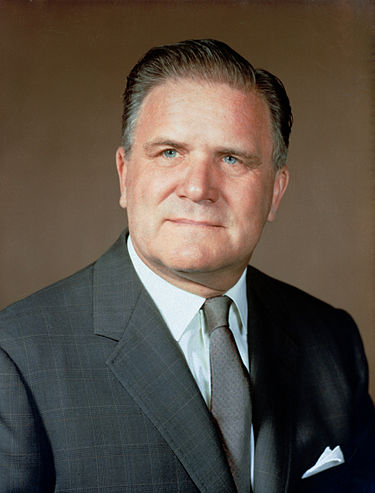

James Webb Teleskoopin Historia

Avaruusteleskooppi rakennettiin Nasan, Euroopan avaruusjärjestön (ESA) ja Kanadan avaruusjärjestön yhteistyönä.
Se on nimetty Nasan toisen johtajan, Apollo-avaruusohjelmaan merkittävästi vaikuttaneen
James Webbin (1906–1992) mukaan. (Kuva vasemmalla)
Teleskooppi oli alkuperäisen suunnitelman mukaan tarkoitus laukaista vuonna 2014,
mutta pian ilmeni, että se laukaistaisiin todennäköisemmin vasta vuonna 2016 – yhdysvaltalaisten
lähteiden mukaan.
Vuoden 2010 keväällä ilmeni, että alusta pitää testata enemmän. Nasan kongressille lähettämässä budjettipyynnössä
projektille oli määritelty 60 miljoonaa dollaria enemmän kuin aiemmin oli puhuttu. Senaatissa Nasan rahoituksesta
vastaavan komitean puheenjohtaja Barbara Mikulski (demokraatti) nosti esille kustannusylitykset ja vaati erillistä
komiteaa asian käsittelemiseksi. Heinäkuussa 2011 Yhdysvaltain kongressissa oltiin tekemässä budjettiratkaisua,
joka olisi lopettanut Webbin kehittämisen. Marraskuussa edustajainhuone hyväksyi Nasan kompromissiehdotuksen,
joka takasi Webb-projektille täyden rahoituksen. Webbin kokonaiskustannukset ovat olleet 11 miljardia euroa.
¨
Teleskooppi läpäisi keväällä 2010 Nasan toimeenpaneman kriittisen suunnittelukatselmuksen (Mission CDR).
Joulukuussa 2015 kantoraketiksi varmentui Ariane 5, kun ESA allekirjoitti Arianespacen kanssa laukaisusopimuksen.
Teleskooppi oli tarkoitus lähettää avaruuteen lokakuussa 2018, mutta laukaisua jouduttiin siirtämään maaliskuulle
2021 avaruusaluksen teknisten ongelmien takia.
Laukaisua siirrettiin jälleen vuoden 2020 aikana koronapandemian takia. Seuraavaksi aiheutti ongelmia Ariane 5 -kantoraketti
sekä observatorion kuljettaminen Kaliforniasta Ranskan Guyanaan. Teleskooppi laukaistiin lopulta avaruuteen Kouroun
avaruuskeskuksesta Ranskan Guayanasta 25. joulukuuta 2021. Kokoontaitetun rakenteen avautuminen päättyi onnistuneesti
8. tammikuuta 2022. Teleskooppi saapui määränpäähänsä ja ohjattiin kiertämään Lagrangen L2-pistettä 25. tammikuuta 2022.
Lähteet: Wikipedia
Avaruusteleskooppi rakennettiin Nasan, Euroopan avaruusjärjestön (ESA) ja Kanadan avaruusjärjestön yhteistyönä. Se on nimetty Nasan toisen johtajan, Apollo-avaruusohjelmaan merkittävästi vaikuttaneen James Webbin (1906–1992) mukaan. (Kuva vasemmalla)
Teleskooppi oli alkuperäisen suunnitelman mukaan tarkoitus laukaista vuonna 2014, mutta pian ilmeni, että se laukaistaisiin todennäköisemmin vasta vuonna 2016 – yhdysvaltalaisten lähteiden mukaan.
Vuoden 2010 keväällä ilmeni, että alusta pitää testata enemmän. Nasan kongressille lähettämässä budjettipyynnössä projektille oli määritelty 60 miljoonaa dollaria enemmän kuin aiemmin oli puhuttu. Senaatissa Nasan rahoituksesta vastaavan komitean puheenjohtaja Barbara Mikulski (demokraatti) nosti esille kustannusylitykset ja vaati erillistä komiteaa asian käsittelemiseksi. Heinäkuussa 2011 Yhdysvaltain kongressissa oltiin tekemässä budjettiratkaisua, joka olisi lopettanut Webbin kehittämisen. Marraskuussa edustajainhuone hyväksyi Nasan kompromissiehdotuksen, joka takasi Webb-projektille täyden rahoituksen. Webbin kokonaiskustannukset ovat olleet 11 miljardia euroa.
Teleskooppi läpäisi keväällä 2010 Nasan toimeenpaneman kriittisen suunnittelukatselmuksen (Mission CDR). Joulukuussa 2015 kantoraketiksi varmentui Ariane 5, kun ESA allekirjoitti Arianespacen kanssa laukaisusopimuksen. Teleskooppi oli tarkoitus lähettää avaruuteen lokakuussa 2018, mutta laukaisua jouduttiin siirtämään maaliskuulle 2021 avaruusaluksen teknisten ongelmien takia.
Laukaisua siirrettiin jälleen vuoden 2020 aikana koronapandemian takia. Seuraavaksi aiheutti ongelmia Ariane 5 -kantoraketti sekä observatorion kuljettaminen Kaliforniasta Ranskan Guyanaan. Teleskooppi laukaistiin lopulta avaruuteen Kouroun avaruuskeskuksesta Ranskan Guayanasta 25. joulukuuta 2021. Kokoontaitetun rakenteen avautuminen päättyi onnistuneesti 8. tammikuuta 2022. Teleskooppi saapui määränpäähänsä ja ohjattiin kiertämään Lagrangen L2-pistettä 25. tammikuuta 2022.
Lähteet: Wikipedia